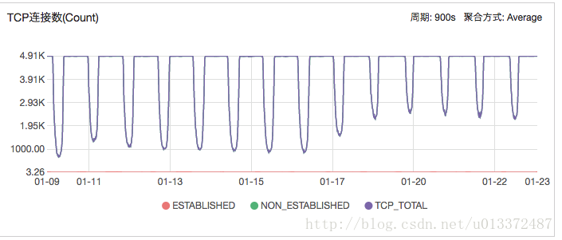

注意：这个解决方法是不合理的，具体原因看文章底部吧，该文章只作为分析tcp连接的参考吧。
阿里云服务器监控中发现tcp连接数监控异常，状态如下图：

查看linux tcp连接状态发现存在大量 TIME_WAIT 状态连接
# 查看Linux 服务器tcp连接数
netstat -na | awk '{print \$5,\$6}'| sort | uniq -c | sort -n
结果：
2500 10.50.23.90:6379 TIME_WAIT解决方法：
sudo vim /etc/sysctl.conf
编辑下面参数：
net.ipv4.tcp_tw_recycle = 1
net.ipv4.tcp_fin_timeout = 30
net.ipv4.tcp_tw_reuse = 1
net.ipv4.tcp_timestamps=1
执行命令
sudo sysctl -p # 从配置文件“/etc/sysctl.conf”加载内核参数设置原理牵扯到 tcp连接终止协议的四次握手，参考文章：
sysctl参数说明：
net.core.netdev_max_backlog = 400000
#该参数决定了，网络设备接收数据包的速率比内核处理这些包的速率快时，允许送到队列的数据包的最大数目。
net.core.optmem_max = 10000000
#该参数指定了每个套接字所允许的最大缓冲区的大小
net.core.rmem_default = 10000000
#指定了接收套接字缓冲区大小的缺省值（以字节为单位）。
net.core.rmem_max = 10000000
#指定了接收套接字缓冲区大小的最大值（以字节为单位）。
net.core.somaxconn = 100000
#Linux kernel参数，表示socket监听的backlog(监听队列)上限
net.core.wmem_default = 11059200
#定义默认的发送窗口大小；对于更大的 BDP 来说，这个大小也应该更大。
net.core.wmem_max = 11059200
#定义发送窗口的最大大小；对于更大的 BDP 来说，这个大小也应该更大。
net.ipv4.conf.all.rp_filter = 1
net.ipv4.conf.default.rp_filter = 1
#严谨模式 1 (推荐)
#松散模式 0
net.ipv4.tcp_congestion_control = bic
#默认推荐设置是 htcp
net.ipv4.tcp_window_scaling = 0
#关闭tcp_window_scaling
#启用 RFC 1323 定义的 window scaling；要支持超过 64KB 的窗口，必须启用该值。
net.ipv4.tcp_ecn = 0
#把TCP的直接拥塞通告(tcp_ecn)关掉
net.ipv4.tcp_sack = 1
#关闭tcp_sack
#启用有选择的应答（Selective Acknowledgment），
#这可以通过有选择地应答乱序接收到的报文来提高性能（这样可以让发送者只发送丢失的报文段）；
#（对于广域网通信来说）这个选项应该启用，但是这会增加对 CPU 的占用。
net.ipv4.tcp_max_tw_buckets = 10000
#表示系统同时保持TIME_WAIT套接字的最大数量
net.ipv4.tcp_max_syn_backlog = 8192
#表示SYN队列长度，默认1024，改成8192，可以容纳更多等待连接的网络连接数。
net.ipv4.tcp_syncookies = 1
#表示开启SYN Cookies。当出现SYN等待队列溢出时，启用cookies来处理，可防范少量SYN攻击，默认为0，表示关闭；
net.ipv4.tcp_timestamps = 1
#开启TCP时间戳 默认开启
#以一种比重发超时更精确的方法（请参阅 RFC 1323）来启用对 RTT 的计算；为了实现更好的性能应该启用这个选项。
net.ipv4.tcp_tw_reuse = 1
#表示开启重用。允许将TIME-WAIT sockets重新用于新的TCP连接，默认为0，表示关闭；
net.ipv4.tcp_tw_recycle = 1
#表示开启TCP连接中TIME-WAIT sockets的快速回收，默认为0，表示关闭。
net.ipv4.tcp_fin_timeout = 10
#表示如果套接字由本端要求关闭，这个参数决定了它保持在FIN-WAIT-2状态的时间。
net.ipv4.tcp_keepalive_time = 1800
#表示当keepalive起用的时候，TCP发送keepalive消息的频度。缺省是2小时，改为30分钟。
net.ipv4.tcp_keepalive_probes = 3
#如果对方不予应答，探测包的发送次数
net.ipv4.tcp_keepalive_intvl = 15
#keepalive探测包的发送间隔
net.ipv4.tcp_mem
#确定 TCP 栈应该如何反映内存使用；每个值的单位都是内存页（通常是 4KB）。
#第一个值是内存使用的下限。
#第二个值是内存压力模式开始对缓冲区使用应用压力的上限。
#第三个值是内存上限。在这个层次上可以将报文丢弃，从而减少对内存的使用。对于较大的 BDP 可以增大这些值（但是要记住，其单位是内存页，而不是字节）。
net.ipv4.tcp_rmem
#与 tcp_wmem 类似，不过它表示的是为自动调优所使用的接收缓冲区的值。
net.ipv4.tcp_wmem = 30000000 30000000 30000000
#为自动调优定义每个 socket 使用的内存。
#第一个值是为 socket 的发送缓冲区分配的最少字节数。
#第二个值是默认值（该值会被 wmem_default 覆盖），缓冲区在系统负载不重的情况下可以增长到这个值。
#第三个值是发送缓冲区空间的最大字节数（该值会被 wmem_max 覆盖）。
net.ipv4.ip_local_port_range = 1024 65000
#表示用于向外连接的端口范围。缺省情况下很小：32768到61000，改为1024到65000。
net.ipv4.netfilter.ip_conntrack_max=204800
#设置系统对最大跟踪的TCP连接数的限制
net.ipv4.tcp_slow_start_after_idle = 0
#关闭tcp的连接传输的慢启动，即先休止一段时间，再初始化拥塞窗口。
net.ipv4.route.gc_timeout = 100
#路由缓存刷新频率，当一个路由失败后多长时间跳到另一个路由，默认是300。
net.ipv4.tcp_syn_retries = 1
#在内核放弃建立连接之前发送SYN包的数量。
net.ipv4.icmp_echo_ignore_broadcasts = 1
# 避免放大攻击
net.ipv4.icmp_ignore_bogus_error_responses = 1
# 开启恶意icmp错误消息保护
net.inet.udp.checksum=1
#防止不正确的udp包的攻击
net.ipv4.conf.default.accept_source_route = 0
#是否接受含有源路由信息的ip包。参数值为布尔值，1表示接受，0表示不接受。
#在充当网关的linux主机上缺省值为1，在一般的linux主机上缺省值为0。
#从安全性角度出发，建议你关闭该功能。以上方案不合理原因分析：
配置以上参数后，对于客户端属于nat网络的用户会导致无法连接：
若远端服务器的内核参数net.ipv4.tcp_tw_recycle和net.ipv4.tcp_timestamps的值都为1，则远端服务器会检查每一个报文中的时间戳（Timestamp），若Timestamp不是递增的关系，不会响应这个报文。配置NAT后，远端服务器看到来自不同客户端的源IP相同，但NAT前每一台客户端的时间可能会有偏差，报文中的Timestamp就不是递增的情况。
也就是nat网络中客户端部分连接被抛弃了。
[1] 也说说TIME_WAIT状态: https://www.cnblogs.com/yjf512/p/5327886.html[2] 查看linux中的TCP连接数: http://blog.csdn.net/he_jian1/article/details/40787269